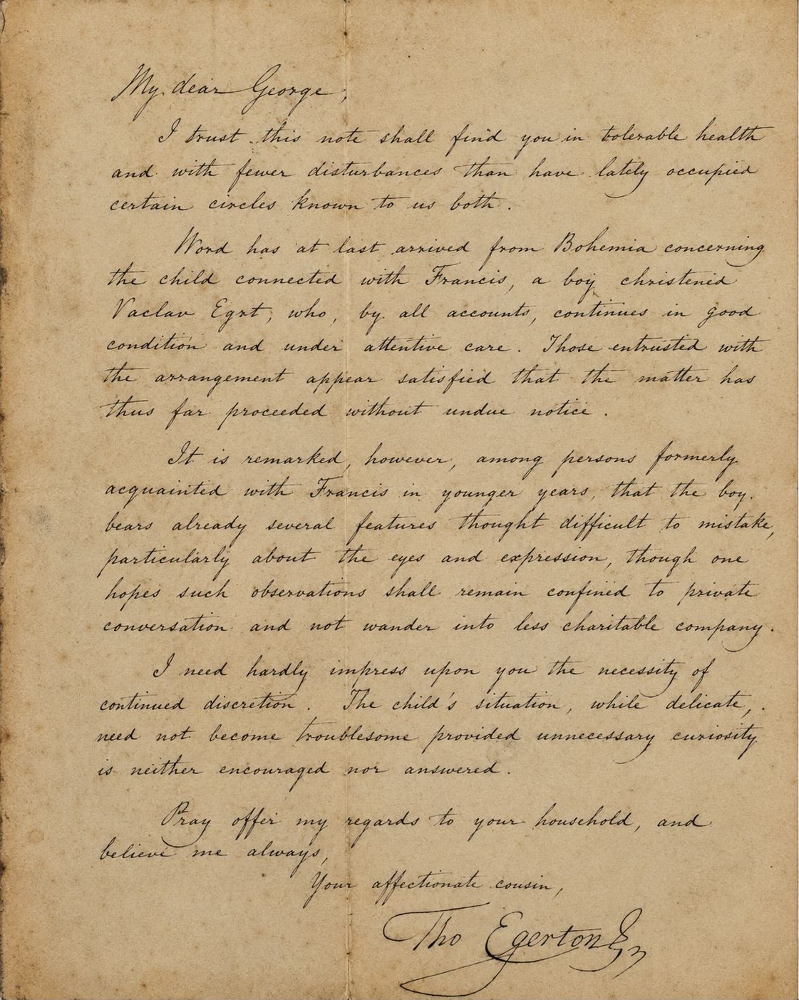
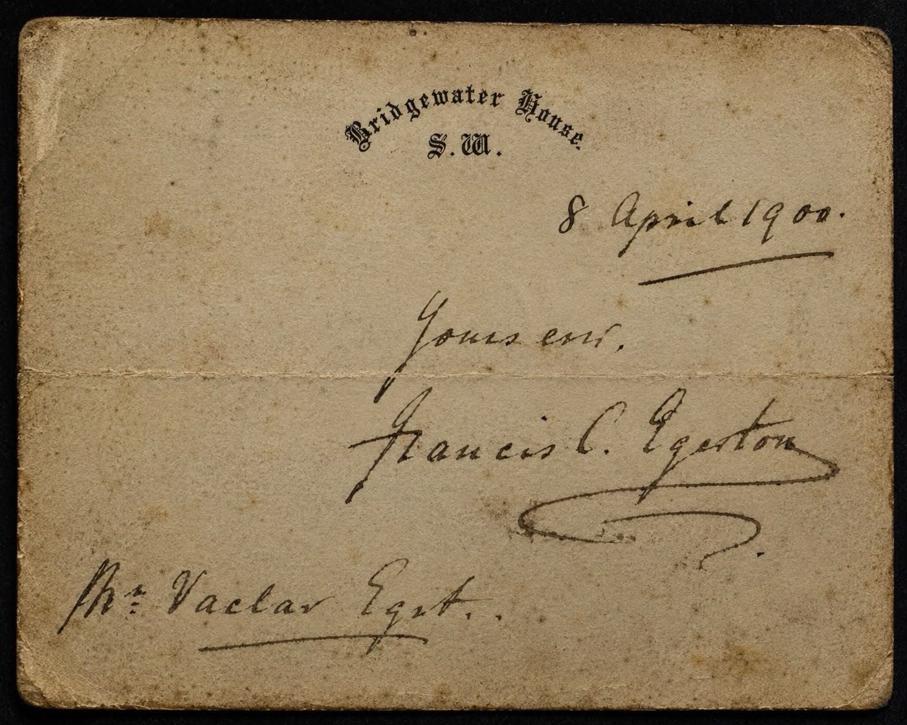
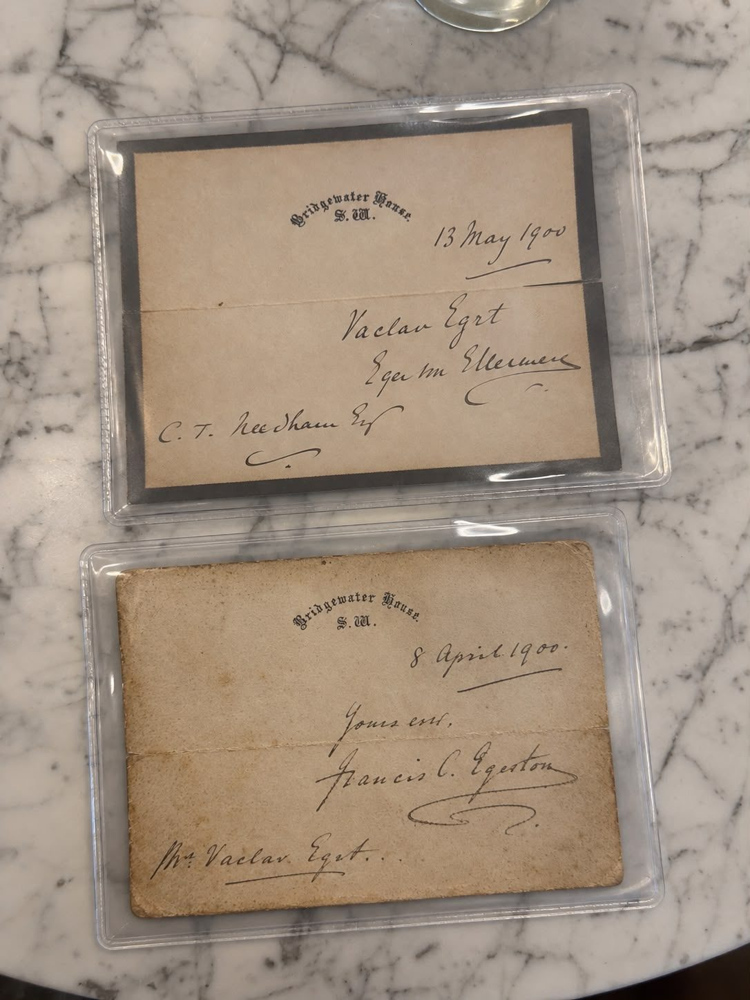

I. The House of Egerton and Its Continental Associations
The House of Egerton, long distinguished amongst the historic families of the English nobility, traces its ancestry through centuries of service to the Crown, its name being particularly associated with the Earls and Dukes of Bridgewater and, in later generations, the Earls of Ellesmere.
From this ancient family emerged statesmen, naval officers, patrons of learning and persons of considerable influence in the public affairs of the Kingdom.
Amongst its distinguished descendants was Admiral the Honourable Francis Egerton (1824–1895), a younger son of Francis Egerton, 1st Earl of Ellesmere, whose career in the Royal Navy and whose connections with the principal aristocratic houses of Britain are matters of established historical record.
Alongside the recognised branches of the family, particular genealogical interest attaches to a reported collateral line established in the historic Kingdom of Bohemia, associated with the surnames Egert and Egrt.
The traditional account of this continental connection is accompanied by a small body of correspondence attributed to members or associates of the Egerton family, including documents bearing the heading of Bridgewater House, London.
II. The Bohemian Branch and the Question of Descent
Within the family account, the Bohemian Egert line is described as descending from an association with Francis of the Egerton family, outside the principal matrimonial lines customarily recorded in the British peerage.

The central figure of this account is a child named Vaclav Egrt, whose circumstances are expressly mentioned in an undated manuscript letter addressed to George and bearing a signature apparently reading Tho Egerton.
The letter refers to the receipt of intelligence from Bohemia concerning a boy connected with Francis, and records that arrangements had been made for the child’s welfare.
Of particular significance is the passage:
“Word has at last arrived from Bohemia concerning the child connected with Francis, a boy christened Vaclav Egrt.”
The writer further observes that persons formerly acquainted with Francis had perceived in the child a marked resemblance, particularly in the eyes and expression.
Such observations, while of evident genealogical interest, cannot of themselves establish paternity. They do, however, demonstrate that the manuscript presents the child’s relationship to Francis as a matter known and discussed within a private circle.
The identity of the Francis concerned remains to be conclusively established.
III. The Question of Legitimacy and Private Recognition
The manuscript contains a further passage deserving particular attention:
“I need hardly impress upon you the necessity of continued discretion.”
The circumstances described in the letter suggest that the child’s position was regarded as a delicate private matter.
In the social conventions of nineteenth-century Britain, the existence of descendants born outside marriage could remain absent from published genealogical tables, even where private familial knowledge or correspondence survived.
Such circumstances did not necessarily extinguish relationships of blood or kinship, although they could materially affect questions of legal legitimacy, inheritance and succession to hereditary dignities.
The Bohemian account is therefore of interest not as evidence of a claim to an English peerage, but as a possible record of collateral descent beyond the recognised matrimonial lines.
IV. The Bridgewater House Correspondence, 1900
Two further manuscript documents bearing the heading Bridgewater House, S.W. provide an additional point of reference in the investigation.

The first, dated 8 April 1900, bears a signature provisionally read as Francis C. Egerton and includes the name Vaclav Egert.
The second, dated 13 May 1900, likewise bears the Bridgewater House heading and prominently records the name Vaclav Egert, together with other handwritten names which remain subject to palaeographical examination.

The importance of these documents resides in their apparent association of the Egert name with correspondence carrying the designation of a residence historically connected with the Earls of Ellesmere.
Their dates are also material. Admiral Francis Egerton died in 1895, five years before the correspondence of 1900. Consequently, the documents cannot be attributed to him personally without contradicting the established chronology.
The identification of their writers, their intended recipients and their relationship to the wider family remains essential to the reconstruction of the purported Bohemian descent.
If authenticated, the documents may provide valuable evidence of personal contact or knowledge between persons bearing the Egert name and individuals associated with the Egerton household.
They do not, standing alone, establish a continuous pedigree.
V. Egerton, Egert and Egrt: Names Across Two Traditions
The continental family account preserves the forms Egert and Egrt, which are considered in connection with the English surname Egerton.
During the nineteenth century, the lands of the Bohemian Crown formed part of the Habsburg monarchy, within which German and Czech linguistic practices coexisted in civil, ecclesiastical and administrative records.
The variation of personal names across such records is a recognised feature of Central European genealogical research.
Nevertheless, the surname Egrt also possesses an independently attested Germanic derivation, associated with the personal name Eckhart.
It follows that the proposed connection between Egerton and Egert must be established through identifiable persons and records of filiation, rather than through orthographic resemblance alone.
VI. The Standing of the Collateral Line
Within the present family tradition, the Egert branch is regarded as a Bohemian collateral line of the wider House of Egerton.
Its claimed origin is associated with a private relationship involving a member of the Egerton family, and its subsequent history with the settlement or upbringing of a child in Bohemia.
The surviving correspondence supplies a documentary basis for investigating that tradition, particularly in respect of the names Francis, George and Vaclav.
The precise descent, however, awaits corroboration by independent records capable of connecting successive generations.
Recognition of a biological collateral relationship, should it be established, would remain distinct from any question of legitimacy for the purposes of hereditary succession, entitlement to armorial bearings or recognition of noble rank.
VII. An Historical Lineage Preserved Through Correspondence
The history of the Egerton family has traditionally been preserved through the records of its principal houses, the succession of its titles and the public careers of its distinguished members.
The investigation of its alleged Bohemian collateral line offers an opportunity to examine a less familiar dimension of that history.
The manuscripts attributed to the family, particularly the letter concerning a boy named Vaclav Egrt and the subsequent Bridgewater House correspondence of 1900, constitute the principal materials presently identified in support of the enquiry.
Their ultimate significance will depend upon authentication, provenance and comparison with contemporary British and Bohemian records.
For the present, they preserve a noteworthy account of a possible familial connection extending from the English aristocracy into Central Europe, and invite the more exacting scrutiny which every serious question of lineage deserves.
In matters of ancestry, tradition preserves the question; evidence must establish the descent.